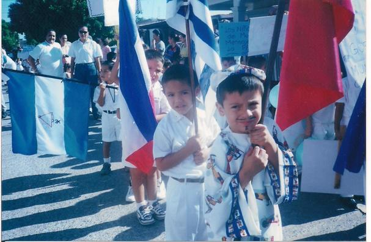

Durante la etapa de la primaria estuve en dos escuelas. En la primera pasé los primeros cuatro años, en ese tiempo me tocó participar en algunos desfiles, en uno de ellos me trataron de vestir como oriental.

Los últimos dos años de primaria los pasé en otra escuela. Antes de entrar a quinto año de primaria conocí a un sujeto, su nombre es José Antonio Chavarín Díaz, que tiempo después me lo encontré en la escuela que acababa de entrar, me tocó en el mismo salón que a él, desde ahí nos llevamos más, nos dimos cuenta que vivíamos en la misma colonia, él vivía a 4 calles de mi casa.
El maestro que me dió clases quinto y sexto de primaria, para cualquier día festivo hacíamos ceviche de sierra, para cualquier ocasión no faltaba el ceviche de sierra.